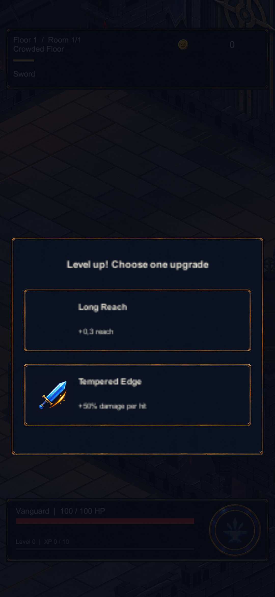
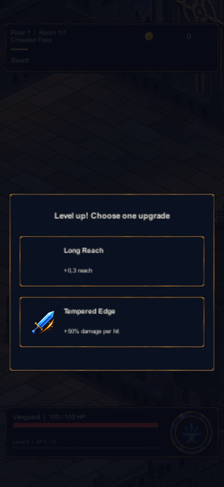
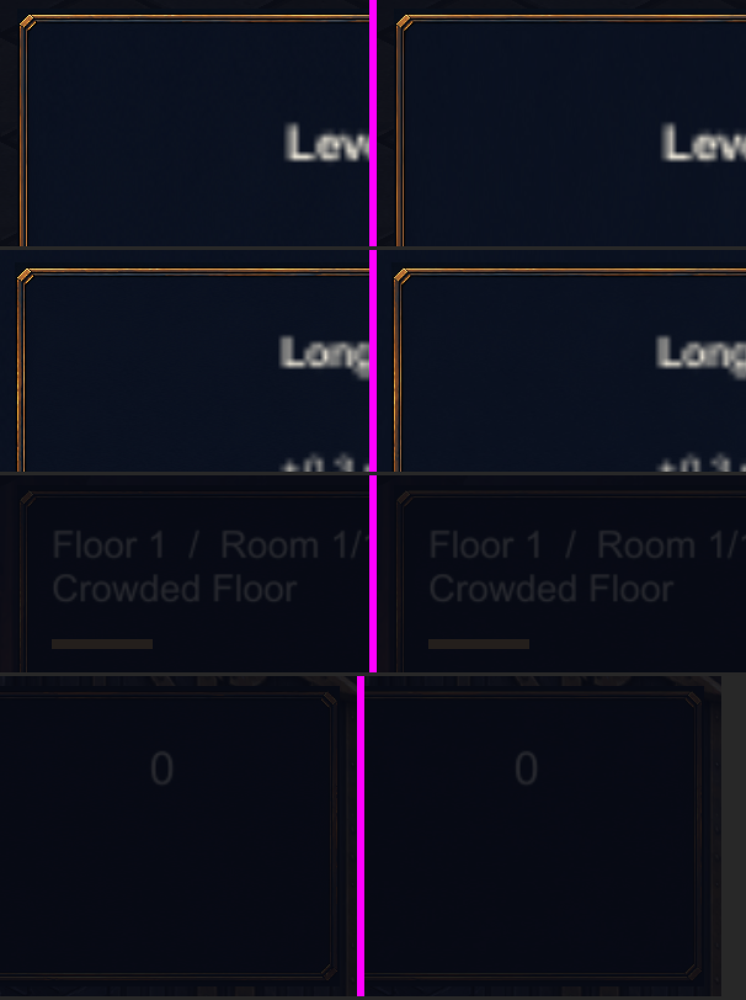
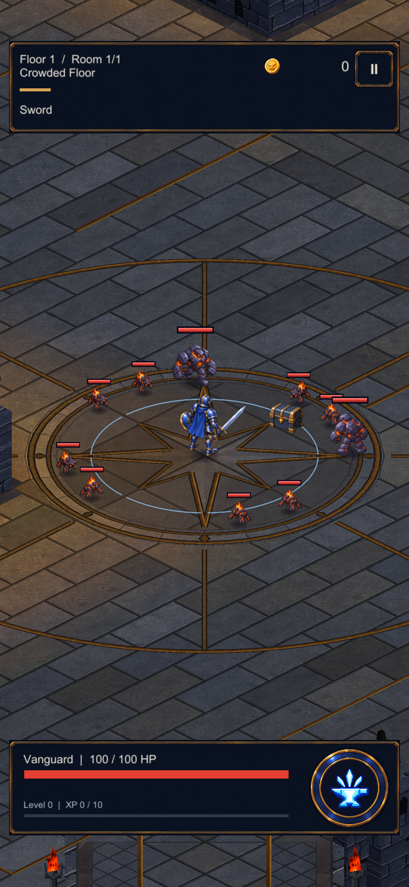

Forged UI panel import — 2026-09-30
UI_Panel_ForgedBlank_v2: 2172x724 RGB24 uncompressed (4.5 MB) to 1024x341 ASTC 4x4 on Android (345 KB). Actual Unity captures, same camera and state; the Editor shows the 1024 resize but not ASTC. See README.md.
Level-up choice (the panel at its largest)


Corners and edges at 2x (left before, right after)

HUD in play
